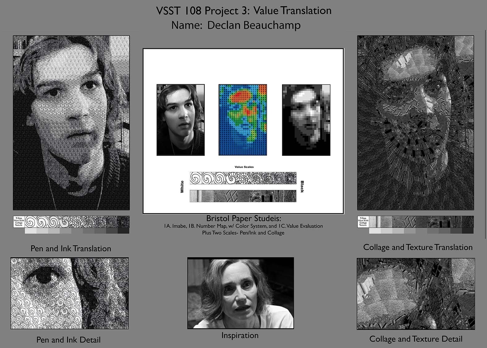

Design I Project 3
In this project, we were tasked with creating a pen and ink value scale with a pattern, and also one with images. After we did that, we had to take a photograph of ourselves as a recreation of a shot from an assigned movie, with mine being Sally Potter's The Party. After that, we had to posterize the image we took of ourselves, and overlay the value scales we created. Personally, I am really proud of the pen and ink one, I think the image came out super clear, and the value was translated sucessfully.